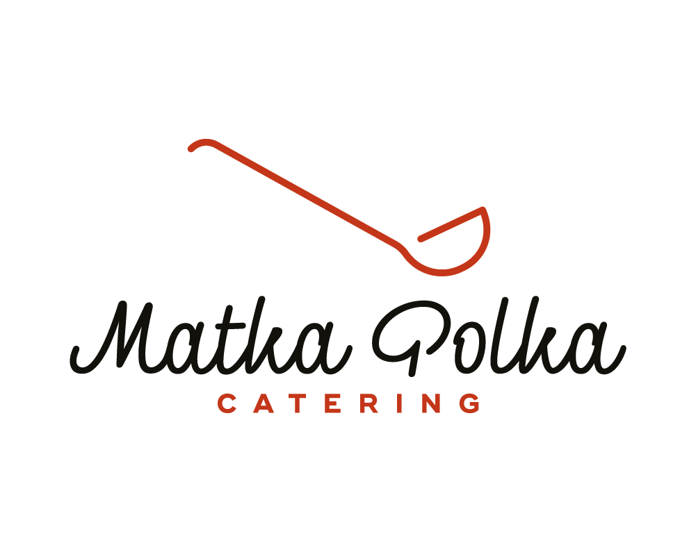
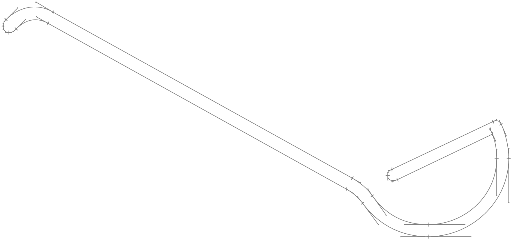

THE BRIEF The brief was to create a brand of a service offered by Karczma Soplicowo restaurant in Warsaw which included organised parties, corporate catering, and food services in a theme of traditional Polish cuisine. Matka Polka – ‘Polish mother’ expresses the warm feeling of eating at home.
Icons for brand’s web page: menu, cuisine, transport, events, gallery, entertainment, about us, our clients, contact
© 2017 Mikołaj Grabowski
